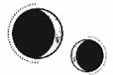

EPÍLOGO
Julius 1808
El ferry que surcaba las aguas del sinuoso río dobló el último meandro y Paladia apareció ante los ojos de los pasajeros. Aquellos que nunca habían visto la famosa ciudad ahogaron una sonora exclamación.
Resplandecía como una corona gigantesca, colocada en el río y enmarcada por unas imponentes montañas.
En la proa, una joven de grandes ojos plateados contemplaba la ciudad, incapaz de apartar la mirada incluso cuando el barco atracó y los demás pasajeros comenzaron a desembarcar.
Se detuvo en lo alto de la pasarela mientras buscaba un rostro conocido entre la multitud que se había reunido en el muelle.
—¡Enid! —la llamó alguien.
Varias personas se volvieron para mirar a Lila Bayard, la antigua paladina, que corría en dirección al barco, seguida de su hijo Apollo y varios guardias.
Lila llegó hasta ella la primera y la estrechó en un abrazo antes de retroceder.
—¡Mírate! Ha pasado tanto tiempo que temía no reconocerte —bajó la voz—, pero eres la viva imagen de tu madre.
Enid sonrió.
—Lo sé —dijo con un suave acento etrasiano—. Padre siempre me lo dice.
Lila negó con la cabeza.
—No me puedo creer que por fin te hayan dejado venir. Pensaba que te harían seguir estudiando en Khem, pero me alegro mucho de que vayamos a tenerte en el programa.
Enid le ofreció una sonrisa astuta.
—Bueno, sabían que siempre había querido estudiar en la Academia. La formación que se imparte en Khem es muy distinta… y se centra sobre todo en la metalurgia.
Lila echó una mano hacia atrás y tiró de Pol, que se había quedado atrás con timidez, para que se uniera a la conversación. Enid y él cruzaron miradas un brevísimo instante.
—Bueno, ojalá te hubieran permitido venir antes —suspiró Lila—. Tus habilidades nos habrían sido de gran ayuda. Por desgracia, Pol ha heredado los pésimos hábitos de estudio de sus padres y ha tenido que examinarse dos veces de Piromancia.
Pol se puso colorado.
—Pero solo la parte escrita. Además, aprobé la certificación hace años —masculló.
—Serás el director de la Academia algún día. ¿Cómo te van a tomar en serio con un expediente así? Es una suerte que ahora contemos con Enid. Ella nos dará la legitimidad académica que nos falta. —Lila miró a uno de los guardias—. Trasladad su equipaje a Solis Splendor. Tomaremos la ruta panorámica antes de volver a la Academia.
Un coche los llevó por las sinuosas calles que ascendían desde la zona portuaria hasta los niveles superiores de la ciudad, en dirección al norte, y se detuvo en una plaza amplia, abierta al cielo. Allí había una estatua rodeada de unas altas columnas.
Lila vaciló antes de abrir la puerta.
—Deberías ver esto —le dijo saliendo del coche—. La terminaron hace solo unas semanas.
En la plaza había un reducido grupo de personas, aunque la mayoría de la gente se apartó de su camino al ver que Lila se dirigía hacia el centro del área.
La estatua representaba a un soldado de la Resistencia, vestido con una armadura de combate y su correspondiente arnés de escalada. A sus pies, podía leerse: En recuerdo de los caídos.
Las columnas estaban hechas de mármol liso y estaban llenas de nombres: Apollo Holdfast, Lucien Holdfast, Soren Bayard, Sebastian Bayard, Eddard Althorne, Jan Crowther, Titus Bayard… La lista era interminable.
Lila miró a su alrededor.
—Aquí fue donde estalló la bomba de anulitio. Ha sido uno de los últimos lugares en reconstruirse, porque proteger a los trabajadores de la contaminación era una tarea complicada. Yo quería que se erigiera un monumento conmemorativo en recuerdo de las personas que murieron en la guerra y decidieron colocarlo aquí. Creo que me gusta, pero… siento que nada me parecerá del todo suficiente. ¿Qué opinas tú?
Enid se encogió de hombros, pero recorrió las columnas rápidamente con una aguda mirada.
—Nunca había visto un monumento conmemorativo de la guerra. No sé qué debo sentir exactamente al verlo.
—Yo tampoco lo sé —admitió Lila tomando aire—. Tenía la esperanza de que fuera…
Antes de que Lila pudiera terminar de hablar, una mujer agarró a Enid del brazo y tiró de ella.
—¿Helena?
Enid se volvió, sorprendida, para mirar a la desconocida, que tenía el rostro surcado de marcas y una pequeña cicatriz en la muñeca. La mujer retrocedió apartando la mano.
—No. No, qué tontería. Lo siento. Pensaba que te conocía.
Lila se giró. Le temblaron los labios antes de hablar:
—Penny, esta es Enid Romano. Ha venido a participar en el programa de vivemancia. Pol y yo le estamos enseñando la ciudad.
Penny contempló a Enid durante un instante y frunció el ceño.
—Vaya —dijo con voz entrecortada—. Lo siento, seguro que te he dado un buen susto al agarrarte así. De espaldas eres idéntica a alguien a quien conocí hace tiempo. ¿No se parece muchísimo a Helena, Lila?
Enid mantuvo una expresión neutra, pero le lanzó una mirada inquisitiva a Lila, que entrecerró los ojos como si intentara entender a qué se refería la otra mujer.
—Creo que es por el pelo. —Lila miró a Enid—. Helena Marino formó parte de la Resistencia, pero murió antes de la Liberación.
—Mi más sentido pésame —le dijo la chica a Penny.
La mujer se la quedó mirando como si estuviera viendo un fantasma antes de darse la vuelta. Una segunda voz los interrumpió casi tan pronto como se hubieron quedado solos.
—Por fin te encuentro, Lila. No te he visto por aquí desde que inauguramos el monumento.
Lila esbozó una mueca antes de forzarse a sonreír mientras se giraba hacia la mujer que había hablado.
—Señora Forrester, qué sorpresa encontrarla aquí.
La mujer, de mediana edad, respiraba con dificultad.
—¿Me puedes explicar por qué corre el rumor de que los Holdfast están volviendo a traer a estudiantes extranjeros a estudiar en la Academia?
La sonrisa de Lila se desvaneció de inmediato y se enderezó para mostrar lo imponente que era su estatura.
—Enid ha sido una de las mejores estudiantes de Khem y ha presentado una propuesta de lo más prometedora sobre el uso de los sellos vivemánticos para tratar lesiones pulmonares. La Academia la ha invitado a venir para apoyar su investigación, porque varias de las dolencias asociadas al anulitio todavía no tienen una cura efectiva.
El rostro de la señora Forrester enrojeció, y luego ella tosió varias veces contra un pañuelo de tela.
—Vaya, ¿dices que está buscando un tratamiento para los pulmones? Qué interesante.
Enid dejó que Lila se encargara de aceptar la pobre disculpa de la mujer y se alejó para examinar las columnas de cerca. Intentó leer los nombres recogidos en ellas, pero había tantos y estaban tan juntos que era casi imposible hacerlo.
En apenas unos minutos, Lila y Pol habían quedado rodeados de personas. Aunque la figura del principado ya no existiera, el atractivo de los Holdfast seguía intacto. Al otro lado de la plaza había algunas tiendas, así que Enid se encaminó hacia allí echándole un último vistazo a sus acompañantes y cruzando fugazmente una mirada con Pol, que la observaba con expresión desconsolada.
Entró en una librería y lo primero que encontró fue un expositor lleno de libros gruesos.
La historia completa de la Guerra Nigromántica de Paladia, escrito por William Dover.
Enid hizo una pausa y contempló los libros durante un momento antes de coger un ejemplar.
—Acaba de salir a la venta esta semana —dijo el dependiente, que se había acercado a ella y miraba la copia que sostenía.
—Me lo he imaginado al no reconocer el título —comentó Enid, que abrió el libro para ojear el índice, pasó el dedo por el nombre de cada capítulo y se detuvo brevemente en uno.
—Bueno, este libro es una de las mejores opciones para entender Paladia y la guerra. O sea, parece que hablas bastante bien el dialecto, pero, si de verdad quieres descubrir todos los detalles de lo ocurrido…, las explicaciones que encontrarás aquí te dirán todo lo que necesitas saber.
Enid arqueó una ceja y el dependiente pareció tomárselo como una invitación para acercarse un poco más.
—Dover ha pasado más de diez años escribiéndolo. Consiguió un permiso especial de la Asamblea y el Frente de Liberación para acceder a todos los registros, incluso a las transcripciones de los juicios, que ni siquiera se habían hecho públicas. Es bastante impactante. Hay algunos capítulos que te recomiendo que te saltes si no deseas pasarlo mal. En cualquier caso, si quieres saber qué pasó, este libro te lo contará todo, absolutamente todo. El autor se ha asegurado de dejar constancia de lo que la gente necesitaba saber.
—¿Y tú lo sabes? —preguntó Enid y, al ver que el dependiente vacilaba, aclaró—: ¿Conoces todo lo que la gente necesitaría saber sobre la guerra?
El joven carraspeó.
—Bueno…, es difícil no conocerlo. Yo fui uno de los niños que nacieron en la Torre. No sé si has oído hablar de eso, pero se juzgó a bastantes personas y nos llevaron de un sitio a otro sin saber muy bien qué hacer con nosotros.
—Lo siento mucho.
Él volvió a carraspear.
—En fin, lo que quería decir es que leer ese libro… me ha ayudado a ponerlo todo en perspectiva.
Enid bajó la vista para contemplar la cubierta de nuevo.
—Tendré que echarle un ojo entonces. Yo vengo de Etras, pero incluso allí se sigue hablando de la guerra de Paladia.
Sin soltar el libro, Enid rodeó al dependiente y se dispuso a deambular por la tienda. En cuanto encontró un pasillo vacío, se apresuró a abrir el libro por el índice y deslizó el dedo por cada capítulo hasta encontrar el que buscaba.
Pasó las páginas hasta llegar a él.
Kaine Ferron, conocido como el Sumo Inquisidor, es el asesino más importante de la historia. Según las fuentes consultadas, fue el miembro más joven de los inmarcesibles al unirse a Morrough, asesinar al principado Apollo Holdfast y sumir la ciudad Estado de Paladia en una de las guerras más devastadoras de la historia a los dieciséis años. Ferron dedicó su vida a escalar entre las filas de los inmarcesibles y no solo fue uno de los nigromantes más jóvenes en «ascender», sino que también se convirtió en uno de los miembros más jóvenes en alcanzar el rango de general durante la guerra.
La destacada aptitud de Ferron como alquimista y vivemante se consideró algo antinatural y un resultado de la experimentación con humanos, una terrible práctica que acabaría pasando a definir el régimen de los inmarcesibles. Sin embargo, a diferencia de los demás sujetos de prueba de Artemon Bennet, Ferron se ofreció voluntario para que experimentaran con él.
Muchos de los inmarcesibles se retiraron tras la guerra. No obstante, el ascenso de Ferron no fue más que el principio. Encabezó las batidas de búsqueda e interrogó a todos los miembros de la Resistencia que consiguieron atrapar antes de matarlos y utilizarlos en las minas de lumitio. Fue precisamente su gusto por las masacres lo que le aseguró su puesto como Sumo Inquisidor y su eventual nombramiento como sucesor de Morrough.
Muchos creen que, si Ivy Purnell no hubiera acabado con la familia Ferron, el régimen de los inmarcesibles habría perdurado unas cuantas décadas más. El estado de salud de Morrough se había deteriorado tanto que hay quien asegura que habría acabado cediéndole el control de Paladia a Ferron antes de que hubiera terminado el año.
El académico Eustace Sederis, especializado en el campo de la nigromancia, escribió lo siguiente en su libro, Ferron: la biografía del Sumo Inquisidor: «Kaine Ferron ya era un monstruo mucho antes de que Morrough llegara a Paladia. Unirse a los inmarcesibles solo permitió que un psicópata nato se regalara en su crueldad y, cuando ni siquiera la inmortalidad ni la inmutabilidad lograron saciar sus impulsos sádicos, se entregó a la experimentación para alcanzar sus metas».
primeros años
Kaine Ferron fue el único hijo de…
Enid oyó un ruido a su espalda, cerró el libro de golpe y se dio la vuelta. Pol estaba al otro lado del pasillo y la miraba con una sonrisa ladeada y triunfal.
Apollo Holdfast era la combinación perfecta de sus padres. Mientras que los ojos azules, el cabello rubio y la sonrisa cálida como el sol eran típicos de los Holdfast, tenía la estructura ósea de los Bayard, lo cual había hecho que fuera incluso más alto que su madre.
—Hola.
Una sonrisa jugueteó en los labios de Enid, que arqueó una ceja y lo estudió con frialdad.
—Hola —respondió.
Pol apoyó una mano en la balda que quedaba un poco más arriba de la cabeza de Enid para inclinarse sobre ella. La chica se limitó a levantar el mentón.
—¿Ya te estás escondiendo de nosotros?
Enid perdió la sonrisa y bajó la vista al libro que sostenía.
—No. He visto que han publicado un nuevo libro sobre la guerra y he pensado en leer qué decía la parte del Sumo Inquisidor.
Pol también perdió la sonrisa.
—No hagas eso. Sabes que nunca van a contar la verdad.
—Ya —dijo ella con un asentimiento y encogiéndose de hombros—. Es que… siento que tengo que conocer qué dicen. Todos repiten lo mismo. Y sé que siempre será así, pero no puedo evitarlo. Este además incluye esa cita de Sederis. —Le ofreció otro encogimiento de hombros que casi resultó convincente—. ¿Qué te apuestas a que mamá ni siquiera aparece en el índice?
Pol le tocó la muñeca.
—Para.
Pero Enid no le hizo caso. Se dio la vuelta, apoyó el libro en el borde de una estantería, lo abrió por el índice alfabético y pasó el dedo por la página hasta detenerse.
Exhaló despacio.
—Mira…
Se movió rápidamente por el libro hasta llegar a una fotografía en el capítulo de Lucien Holdfast.
Enid y Pol se quedaron un rato observándola. En ella aparecían Soren Bayard, Helena Marino y Luc Holdfast, sentados juntos en un sillón. Luc tenía un brazo apoyado sobre los hombros de Helena y los tres miraban a la cámara.
Helena se situaba en el centro. Estaba en los huesos e iba vestida con un uniforme médico que le quedaba demasiado grande y un jersey de punto. También llevaba el pelo recogido en dos trenzas tirantes, sujetas en un espeso moño a la altura de la nuca. Sus ojos grandes y tristes traicionaban la sonrisa que se había esforzado por esbozar.
Enid contempló la imagen durante unos instantes antes de tocarla.
—Nunca había visto una foto suya de la guerra. La única que tu madre nos envió es la que aparecía en su expediente académico.
Pol no dijo nada, pero, cuando Enid fue incapaz de dejar de apartar los ojos de la página, le posó una mano vacilante sobre su hombro. Ella levantó la vista y encontró su mirada antes de ofrecerle una sonrisa triste que recordaba a la de la chica de la fotografía.
Luego, volvió a bajar la cabeza y pasó los dedos por las palabras que acompañaban a la imagen, como si quisiera borrarlas.
—Algún día…, alguien debería aclarar las cosas —murmuró.
Pol carraspeó.
—Ya sabes que mi madre se ofreció a hacerlo. Quería contar lo que ocurrió de verdad justo hasta que se produjo el incendio, pero tus padres se negaron.
Enid asintió despacio, sin despegar la vista de la fotografía.
—Lo sé. Sé que fue una decisión suya y lo entiendo. Si yo hubiera vivido todo aquello…, lo único que querría sería dejarlo atrás. Tratar de explicar algo así no tendría ningún sentido, porque nadie lo entendería. Pero… —le tembló la barbilla— mi madre no merece pasar al olvido. No debería haber quedado relegada a una simple nota a pie de página. Esta no debería ser la única parte del libro en la que aparezca. Se merece su propio capítulo. No, se merece un libro entero. —Le tembló la voz—. Y las cosas que dicen sobre papá…, como si hubiera querido hacer todo aquello, como si hubiera pedido que le hicieran… —Se frotó los ojos con el dorso de la mano y respiró hondo—. Lo siento. Siempre me creo capaz de manejar este tema, pero me enfada tanto que se me revuelve el estómago. —Parpadeó rápidamente—. En cualquier caso, me alegro de haber venido. Necesitaba ver la ciudad donde todo pasó.
»Me resulta tan duro no tener a nadie con quien hablar de esto… Mamá dice que puedo hablar con ella o con papá, pero siempre acaba teniendo que tomarse sus pastillas y presionándose los dedos contra el pecho cuando cree que no la veo. No quiero hacerle pasar por eso solo porque yo desee hablar de la guerra. Y sé que papá teme que no vuelva a dirigirle la palabra nunca más cada vez que sale el tema.
Sujetaba el libro con tanta fuerza que se le estaban poniendo los nudillos blancos, así que acabó dejándolo sobre una estantería y soltando todo el aire retenido.
—No sé qué habría hecho sin ti y sin la tía Lila. Creo que eres la única persona que me conoce de verdad.
Pol le ofreció una sonrisa que le iluminó la mirada.
—Siempre puedes contar conmigo.
Enid asintió, apretó los labios y terminó devolviéndole la sonrisa.
Se hizo una pausa y de pronto cayeron en la cuenta de que estaban solos en aquel pasillo vacío. Enid se sonrojó y a Pol se le ensombreció la mirada al inclinarse hacia delante para cerrar el espacio que los separaba.
Pero entonces oyeron la campanilla de la puerta y Pol se incorporó, retiró la mano y se la pasó por el pelo varias veces antes de carraspear.
—Mamá vendrá de un momento a otro. O los guardias. Pero, cuando lleguemos a casa…, deberíamos… hablar un poco más… —movió la cabeza— sobre… —carraspeó de nuevo—. Bueno, si quieres… hablar de… de cualquier cosa.
Enid parpadeó y asintió con un gesto afirmativo.
—¡Sí! Deberíamos. Pero mejor esperar a casa. Allí… hablaremos más tranquilos.
Asintió de nuevo y pasó junto a él para abandonar el pasillo.
Luego se apresuraron a salir de la librería, dejando atrás el libro de historia, abierto por la página de la fotografía. El pie de foto decía así:
Solsticio de invierno, año solar 1786 PD. El principado Lucien Holdfast con su paladín, Soren Bayard (ver Bayard, Soren; capítulo 12, «El legado de una vida»), y la alquimista extranjera Helena Marino. Marino se marchó de la ciudad cuando estalló la guerra civil paladina para estudiar sanación y, aunque sobrevivió al conflicto, murió prisionera antes de la Liberación. Fue un miembro pasivo de la Orden de la Llama Eterna y no luchó en la guerra.